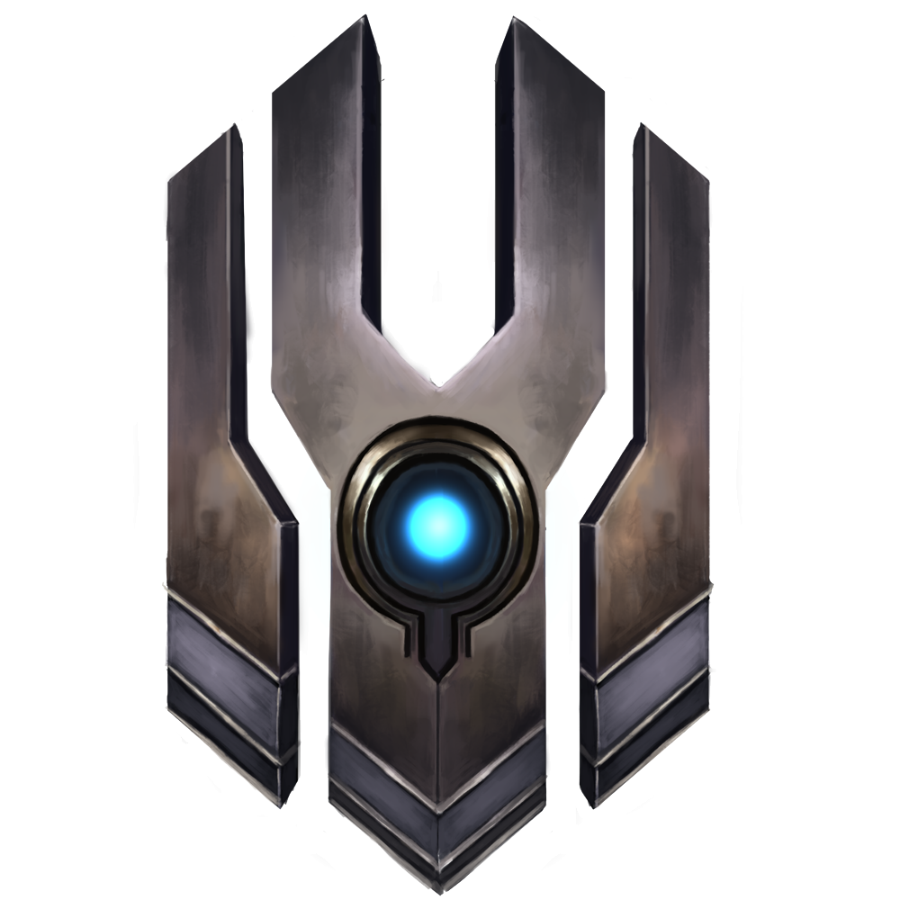

|
|||
|---|---|---|---|
INSTRUMENT OF HOPE |
|||
|  | 
| ||
REALM |
TYPE |
CLASS |
|
Ovagon |
Ranged |
Magical |
Cleric |
Region |
|||
District 1 |
|||
Nicholai took a deep breath, his tail wagging behind him with nerves. Soft opera music
filled the air in honor of the doctor’s arrest. Nicholai remembered his part of the plan
down to the exact words he would say when the soldiers caught him. He rushed to finish
it, aware of the consequences if any unintended research fell into military control.
Steeling himself, Nicholai drew his full attention to the room in front of him. His ears
twitched. Footsteps, once faint, grew louder by the second as he tightened the red
bandana around his neck. Nicholai inhaled, grasped battered drumsticks in one tense
paw and tapped into his powers. Ready, when the doors swing open. Don't flinch!
Armed capitol agents rushed towards him, the first began to shoot. Bang! Bang! Bang! A
second, then third joined in, their bullets pinging harmlessly off Nicholai’s unmoving
body. The agents moved steadily closer. Once they were exactly three feet away, Nicholai
straightened to slam Dr. Lent’s drumsticks on the ground. Shockwaves of beats surged
outward, all agents flung through the air as musical waves bounced off the walls.
In the mayhem, Nicholai turned and jumped onto a nearby console. Without hesitation
he pressed the memorized button sequence, ignoring the grunts rushing towards him.
Lights around the room glowed red with urgent warnings as the music abruptly halted.
The first agent made another grab for him, Nicholai dodged and bashed the agent's face
against the panel beneath him. He leapt to the next agent knocking her down and rushed
the remaining agent. Nicholai slipped between his legs and with another musical
outburst everyone soared outwards as he rushed to the primary data compartment.
His cybernetic arms sparked as they connected to the central port. All agents, back on
their feet, searched around the room. A few more seconds... Nicholai finished the file
upload! Loud heavy bass boomed from the speakers, specific research and inventions
either encrypted or self-destructed as the kill switch spread through the facility.
A serene smile stretched across his face as he sat and waited for hands to press him to
the floor. Nicholai did it! He completed his part of the plan.
OFFICIAL ART

RELATED MYTHS